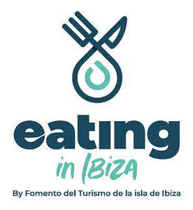

Trade Mark Journal No.2025/038 19 September 2025
UK00004231882 10 July 2025 (9,16,35,41,43)

International priority date claimed: 17 February 2025
(European Union Intellectual Property Office (EUIPO))
(019143724)
- Class 9
- Software; downloadable computer applications; mobile applications; downloadable electronic publications; electronic books. .
- Class 16
- Printed publications; promotional publications; tourist guides [publications]; magazines [periodicals]; books; brochures; photographs; posters; maps; plans; stationery items.
- Class 35
- Promotional, marketing and advertising services; commercial business management; computerized collection of customer indices; services related to bonus, incentive and customer loyalty programs; public relations; provision of online sales spaces for sellers and buyers of products and services; price comparison services; organization of events, exhibitions, fairs and shows for commercial, promotional and advertising purposes; compilation and systematization of information in computer databases; distribution of advertising material by mail; business management of tourist attractions; facilitation and rental of advertising space; sales promotion for third parties; commercial intermediation services; online order management services related to takeaway food. .
- Class 41
- Education; training; entertainment services; sports and cultural activities; direction of courses, seminars and workshops; editorial services; electronic publications (non-downloadable); online publication of guides, travel maps, street maps and leisure guides of cities for travelers, not downloadable; conducting guided tours; organization and holding of conferences, congresses and symposiums; organization of events for cultural, leisure and sporting purposes; organization of parties and receptions; blog writing services; photographic reports; nightclubs. .
- Class 43
- Restaurant services (food); temporary accommodation; catering services; pub; takeaway food services; provision of food and beverages; rental of furniture, linen, tableware and equipment for the supply of food and beverages; restaurant and meal reservations; information, advice and temporary accommodation reservation services; hotel, hostel and guest house services, tourist and vacation accommodation; tourist accommodation reservations.
FOMENTO DEL TURISMO DE LA ISLA DE IBIZA
Representative: ARCADE & ASOCIADOS - Nieves Castro